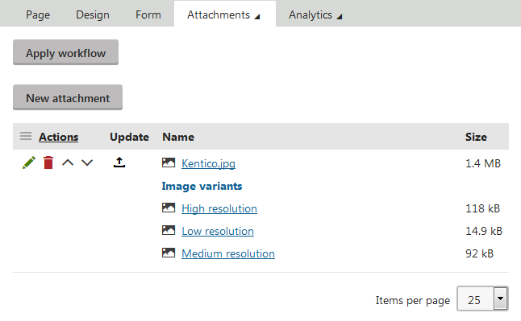

Generating image variants
Image variants are user-defined versions of page attachments. They allow you to create a set of images that can differ in size, color, image quality, and other aspects of your choice.
Before you can use image variants, you need to define the image variants in code by using custom filters. Once defined, you can generate the image variants manually or, in certain cases, the system can generate them for you. The image variants can be generated for grouped, unsorted, and File field attachments.

Automatic image variant generation
The system generates image variants automatically when you:
Add new page attachments
Update existing page attachments
Automatic generation of image variants applies only to image page attachments.
WebDAV and image variants
If you use WebDAV browse mode, you can only see and manage page attachments, image variants are not visible. Based on scope restrictions configured for image variant definitions and the file location of the page attachments, image variants are created (or, if the page attachment is moved to a location for which no image variant definition is set up, deleted) automatically by Kentico.
By default, the system does NOT automatically generate image variants for page attachments that are added or updated via the following features:
Note: If you have an image variant definition restricted to a certain path in the content tree, image variants can be generated for the attachments of pages in the set path. Copying and moving of these pages to a different location has no effect on the generated image variants, i.e., the image variants are not re-generated, deleted, or otherwise modified. The copied or moved page retains the original data even if there are different image variant definitions configured for the target location.
Depending on the performed action, you may need to re-generate existing image variants or generate new ones manually via API.
Handling image variants manually
The system does not perform any action when image variant definitions change. These changes include the following:
Adding a new image variant definition
Editing implementation of an existing image variant definition
Deleting an image variant definition
In such cases, you need to handle the changes and their expected outcome (such as creating new, re-generating, or deleting image variants) in code via API.
For example, to perform create or update actions over the page attachments of pages on the Dancing Goat site, you can use the following code:
// Iterates over all pages on the Dancing Goat sitenew DocumentQuery() .OnSite("DancingGoat") .ForEachObject(page => { AttachmentInfoProvider.GetAttachments() .WhereEquals("AttachmentDocumentID", page.DocumentID) .WhereStartsWith("AttachmentMimeType", "image/") .ExceptVariants() .ForEachObject( // Create or update image variants of published page attachments ... , 50); AttachmentHistoryInfoProvider.GetAttachmentHistories() .WhereEquals("AttachmentDocumentID", page.DocumentID) .WhereStartsWith("AttachmentMimeType", "image/") .ExceptVariants() .ForEachObject( // Create or update image variants of versioned page attachments ... , 50); }, 100);In the ForEachObject extension method, you can work with attachments of pages to generate or re-generate image variants. The second parameter of the ForEachObject extension method states the number of objects that can be processed at a time. You can adjust the value to suit your scenario. Note that page context is not required for deleting image variants.
Pages under workflow
When you make changes to image variants of page attachments, the current workflow step of pages is not modified.
Creating new image variants for existing page attachments
After adding an image variant definition, you need to generate new image variants for existing page attachments. To generate missing image variants, you can use the following code in the ForEachObject extension method from the example:
// Generates new image variants for attachments of pagesattachment => attachment.GenerateMissingVariants(new AttachmentVariantContext(page))Updating existing image variants
When you make changes to image variant definitions, the existing image variants are not re-generated automatically. To update the image variants, you can use the following code in the ForEachObject extension method from the example:
// Re-generates image variants for attachments of pagesattachment => attachment.GenerateAllVariants(new AttachmentVariantContext(page))Deleting image variants without valid definition
After deleting an image variant definition, you can use the following code to delete image variants that were associated with the definition:
// Iterates over all published page attachments and deletes image variants with the specified definitionAttachmentInfoProvider.GetAttachments() // Specify the identifier of the deleted image variant definition .WhereEquals("AttachmentVariantDefinitionIdentifier", "DeletedImageVariantDefinitionIdentifier") .ForEachObject(imageVariant => imageVariant.Delete(), 50);// Iterates over all versioned page attachments and deletes image variants with the specified definitionAttachmentHistoryInfoProvider.GetAttachmentHistories() // Specify the identifier of the deleted image variant definition .WhereEquals("AttachmentVariantDefinitionIdentifier", "DeletedImageVariantDefinitionIdentifier") .ForEachObject(imageVariant => imageVariant.Delete(), 50);After creating the image variants for your attachments, you can display the image variants on your pages.